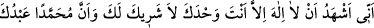
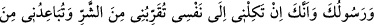
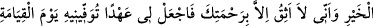
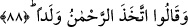

87. O gün Rahmân (olan Allah)’ın nezdinde söz ve izin alandan başkalarının
şefâate güçleri yetmeyecektir.
“O gün Rahmân (olan Allah)’ın nezdinde söz ve izin alandan başkalarının şefâate
güçleri yetmeyecektir.” Yani kulların hiçbiri isyankârlara şefâat edemez, ancak
Allah’tan izin alanlar edebilir. Nitekim bir başka âyette şöyle buyrulmuştur: “O’nun
izni olmadan kendisinin katında kim şefaat edebilir?” (el-Bakara, 2/255) Bu mânâ,
şefâatin ismi fâil anlamında masdar olması durumundadır. Eğer şefâat ismi mef’ûl
anlamında masdar olursa o zaman mânâ şöyle olur: “Günahkârlardan ancak müslüman
olanlara şefaat edilebilir.”
İbn Mes‘ûd (r.a.)’dan rivâyet edildiğine göre Rasûlullah (a.s.) bir gün ashâbına şöyle
buyurdu: “Sizden biriniz her sabah ve akşam Allah katında bir ahd (söz ve izin)
edinmekten âciz midir?” Ashab: “Bu nasıl olur?” diye sordular. Bunun üzerine
Rasûlullah (s.a.) şöyle buyurdu: “Her sabah ve akşam şu duayı okuyarak:
‘Allahım, ey gökleri ve yeri yaratan, gizliyi ve açığı bilen! Senden başka ilah
olmadığına, tek olduğuna, ortağın olmadığına; Muhammed’in senin kulun ve rasûlün
olduğuna şâhidlik ettiğime dâir sana söz veriyorum. Sen beni kendi nefsime
bırakırsan, şerre yaklaştırmış ve hayırdan uzaklaştırmış olursun. Ben ancak senin
rahmetine güveniyorum. Bana kıyamet gününde yerine getireceğin bir söz ver. Çünkü
sen sözünden dönmezsin.’ Bu duâyı okuyunca duâ mühürlenir ve arşın altına konulur.
Kıyamet günü olunca bir çağırıcı: ‘Rahman’ın katında ahdi bulunanlar nerede?’ diye
seslenir ve onlar cennete girerler.[46] Bahru’l-ulûm’da böyle geçmektedir.
88. “Rahmân çocuk edindi” dediler.
Yahudîler, Hristiyanlar ve Araplar’dan meleklerin Allâh’ın kızları olduğunu iddiâ
edenler “Rahman çocuk edindi” dediler.”